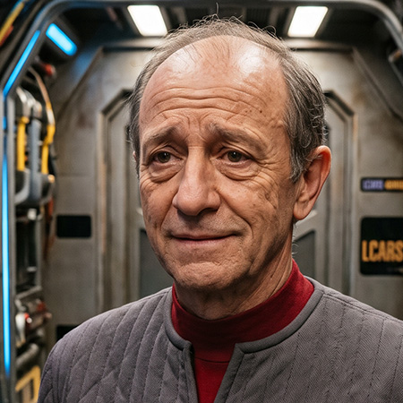

FOTONote
El-Auriano decisamente sui generis e tragicamente privo del celebre carisma della sua specie: anziché ascoltare le sagge confidenze dell'equipaggio nei salotti della nave, passa le sue secolari giornate ad inghiottire rospi e a subire i rimproveri di ogni ufficiale di plancia. (Nota bene: Fantozzi è il nome battesimale ed Ugo il cognome di famiglia).
A causa di una leggendaria serie di gaffe burocratiche e tragicomici incidenti diplomatici, il suo ufficio è stato assegnato nel rinfrescante e angusto Tubo di Jefferies 47 gamma, dove lavora perennemente piegato a novanta gradi, sbattendo la testa contro i condotti del plasma ad ogni squillo di PADD.
In perenne deferenza verso i superiori con servili proversioni ("Comandi, Dottore! Dica, Capitano!"), è famigerato per la sua proverbiale sfortuna che attira micro-anomalie temporali ed eruzioni subspaziali esclusivamente quando indossa l'uniforme di gala.
Hobby & Passioni
- Organizzatore compulsivo della tragica maratona di boccette subspaziali tra sottufficiali.
- Ama praticare la pesca alla trota olografica sotto la famigerata 'Nuvola dell'Impiegato' (una micro-anomalia meteorologica che lo segue costantemente anche nei programmi di olocoperta).
- Sgranocchiare frittate di micro-gamberi spaziali mentre guarda vecchie partite di Calcio Storico Terrestre con ventilatore a curvatura puntato addosso.
Incarichi
- Addetto al Protocollo e Cerimoniale - USS Afrodite NCC-1863